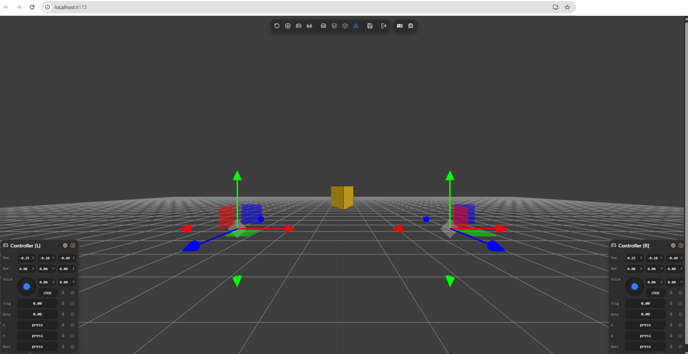
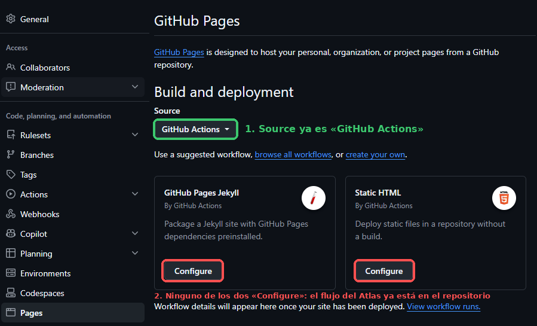
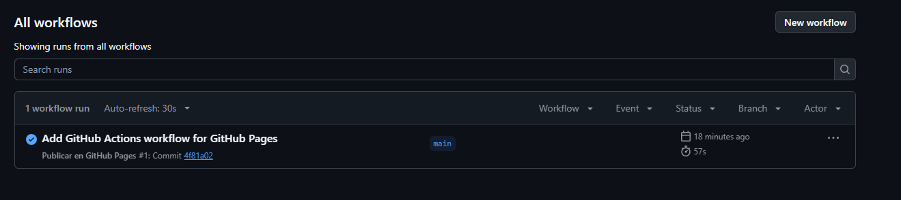
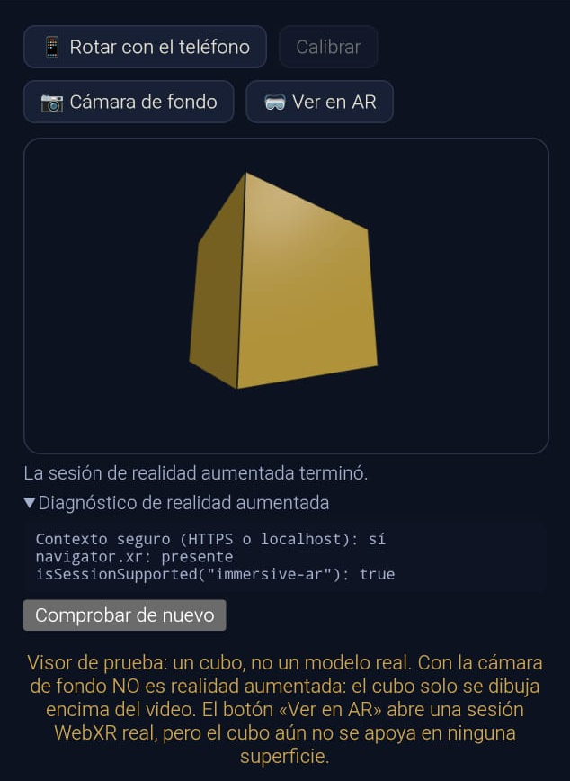
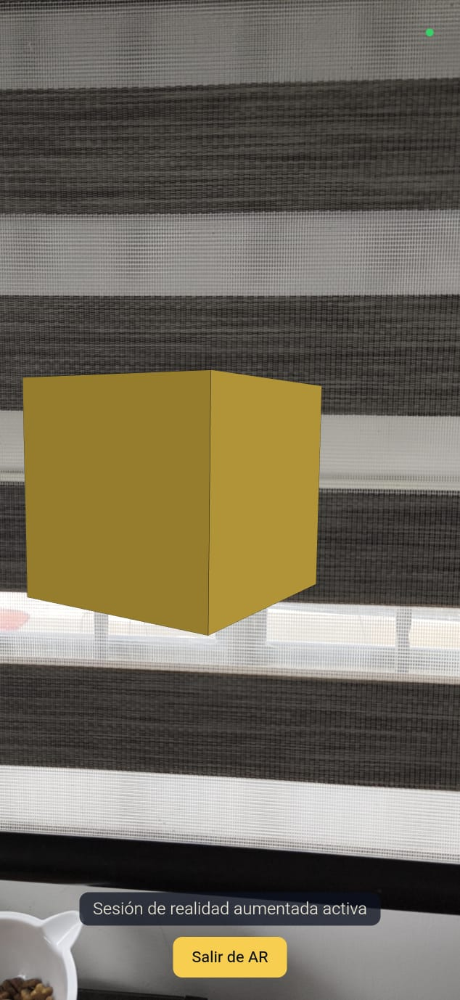

En la Sesión 36 pusimos el video de la cámara detrás del canvas de Three.js. Se ve parecido a la realidad aumentada, pero el cubo solo está dibujado encima de una imagen: si mueves el teléfono, el cubo se queda pegado a la pantalla mientras el mundo se mueve por detrás.
Portada
Electiva · PWA — Sub-bloque B · Proyecto Módulo AR · Sesión 12 de 18
Realidad aumentada con WebXR (1/2)
Hasta ahora el cubo del Atlas solo se dibujaba encima del video de la cámara. Hoy el Atlas abre una sesión de realidad aumentada de verdad con WebXR: aprendemos a preguntar si se puede, a pedir la sesión sin invadir, a entrar y salir sin dejar la app rota — y a ser honestos con lo que todavía no es: el cubo flota, no se apoya en nada.
AsignaturaElectiva - PWA
Sesión12 de 18 · Proyecto Módulo AR
InstituciónUPTC
SESIÓN 12
Del cubo sobre un video a una sesión de AR
El sistema muestra la cámara y sigue el movimiento del teléfono, y nuestra página dibuja el cubo en ese espacio. Con una advertencia que no se esconde: el cubo flota, no se apoya en nada.
WebXR immersive-arThree.js en la sesiónPrueba con emulador
Antes de empezar
Objetivos de aprendizaje
- Distinguir una cámara de fondo (Sesión 36) de una sesión WebXR
immersive-ar: quién dibuja la cámara, quién calcula el movimiento y qué recibe la página. - Detectar con honestidad si un dispositivo puede abrir realidad aumentada, separando cuatro situaciones distintas (sin HTTPS, sin WebXR, sin AR, disponible).
- Pedir la sesión dentro de un clic, con
requiredFeatures,optionalFeaturesy un DOM overlay, y cerrarla devolviendo el visor al estado anterior. - Conectar Three.js al bucle de la sesión XR y razonar en metros: tamaño y posición del objeto en el espacio
local.
.zip
Recursos: pwa-ar-objetos3d-sesion37.zip
CHECKPOINT · CIERRE DE LA SESIÓN 37 · PUNTO DE PARTIDA
El Atlas 3D con visor de Three.js (cubo de prueba), sensores de orientación, cámara de fondo, Service Worker propio (injectManifest), avisos y descarga de fichas. Hoy le agregamos xr.ts y el botón «Ver en AR». Es el punto de partida: este .zip NO tiene el botón «Ver en AR».
.zip
Recursos: pwa-ar-objetos3d-sesion38.zip
VERSIÓN TERMINADA DE ESTA SESIÓN
El Atlas 3D con xr.ts, entrarEnAR y el botón «Ver en AR». Úsalo para ejecutar el resultado y comparar con tu propio trabajo; intenta construirlo tú primero a partir del checkpoint de la Sesión 37.
Punto de partida · 1.1
Lo que hicimos en la Sesión 36 no era realidad aumentada
Para que el objeto parezca estar en el cuarto, alguien tiene que calcular, en cada fotograma, dónde está el teléfono en el espacio y mover la cámara virtual en consecuencia. Eso es lo que hace WebXR.
WebXR Device API es el estándar del navegador para realidad virtual y aumentada. Hoy usamos solo uno de sus modos, immersive-ar: la sesión ocupa toda la pantalla, el navegador (con ayuda del sistema, que en Android es ARCore) muestra la cámara real y sigue la posición del teléfono, y la página dibuja gráficos 3D sobre esa imagen.
Punto de partida · 1.2
Cámara de fondo frente a sesión immersive-ar
La diferencia práctica con la Sesión 36 es de quién hace qué:
| Cámara de fondo (Sesión 36) | Sesión immersive-ar (hoy) | |
|---|---|---|
| ¿Quién muestra la cámara? | La página, con un <video> y getUserMedia | El navegador y el sistema; la página no recibe los píxeles de la cámara |
| ¿Quién sigue el movimiento? | Nadie (en la 35 se usó la orientación, sin posición) | El sistema: posición y orientación del teléfono en cada fotograma |
| ¿Dónde queda el cubo? | Pegado a la pantalla | En un punto del espacio (aunque todavía no sobre una superficie real) |
| ¿Qué ve el usuario? | Un elemento más de la página | Una experiencia de pantalla completa que el usuario inicia y puede cerrar |
| ¿Dónde funciona? | Casi cualquier navegador con cámara | Pocos: hoy, esencialmente Chrome y navegadores basados en Chromium en Android con ARCore |
Punto de partida · 1.3
Dos consecuencias que condicionan el diseño
La última fila de la tabla resume la tabla de compatibilidad de caniuse.com consultada para esta sesión: Chrome en Android y Edge de escritorio, soporte parcial; Safari en iOS, sin soporte; Firefox, desactivado por defecto.
El soporte cambia con las versiones: revisa la tabla vigente antes de prometerle AR a nadie.
1
Una cámara a la vez
Como el navegador toma la cámara para la sesión AR, la cámara de fondo de la Sesión 36 y la sesión AR no pueden convivir: hoy apagamos una antes de abrir la otra.
2
La AR es una mejora
Como en iPhone no hay AR por WebXR, el visor 3D con sensores y cámara de fondo sigue siendo la experiencia «principal» para esos usuarios; la AR se ofrece donde existe. Es la misma lógica de mejora progresiva de todo el curso.
Detección · 2.1
Antes de ofrecer el botón: ¿se puede?
La pregunta «¿tiene este navegador navigator.xr?» no alcanza. Hay cuatro respuestas distintas y cada una merece un mensaje distinto, porque le dicen al usuario qué hacer (o que no puede hacer nada).
contexto-inseguro
WebXR solo existe en HTTPS o localhost: se comprueba primero window.isSecureContext.
sin-webxr
El navegador no tiene navigator.xr (por ejemplo, Safari en iPhone).
sin-ar
isSessionSupported("immersive-ar") responde «no» (o rechaza su promesa): por ejemplo, un computador de escritorio.
disponible
El dispositivo puede abrir una sesión de realidad aumentada.
isSessionSupported("immersive-ar") consulta si el dispositivo puede abrir ese modo; no pide permiso ni abre nada, así que se puede llamar al cargar la página.Detección · 2.2
src/xr.ts: diagnosticarAR
src/xr.ts (detección)
/** Estado de soporte y, además, las comprobaciones una por una (para mostrarlas en pantalla). */
export async function diagnosticarAR(): Promise<{ estado: SoporteAR; lineas: string[] }> {
const lineas: string[] = [];
const seguro = window.isSecureContext;
lineas.push(`Contexto seguro (HTTPS o localhost): ${seguro ? "sí" : "NO"}`);
if (!seguro) return { estado: "contexto-inseguro", lineas };
lineas.push(`navigator.xr: ${navigator.xr ? "presente" : "AUSENTE"}`);
if (!navigator.xr) return { estado: "sin-webxr", lineas };
try {
// Responde si el DISPOSITIVO puede abrir ese modo; no pide permiso ni abre nada.
const ok = await navigator.xr.isSessionSupported("immersive-ar");
lineas.push(`isSessionSupported("immersive-ar"): ${ok}`);
return { estado: ok ? "disponible" : "sin-ar", lineas };
} catch (err) {
lineas.push(`isSessionSupported("immersive-ar") lanzó: ${err instanceof Error ? err.name : String(err)}`);
return { estado: "sin-ar", lineas };
}
}El orden importa: contexto seguro, luego
navigator.xr y al final la pregunta por el modo. Además del veredicto, la función guarda en lineas el resultado de cada comprobación para mostrárselo a quien no logre activar el botón. El try/catch existe porque isSessionSupported puede rechazar su promesa: se trata como «sin AR».Detección · 2.3
Un mensaje por caso
Un switch cubre los cuatro casos; cada mensaje le dice al usuario qué pasa.
src/xr.ts (mensajes)
export function mensajeSoporteAR(estado: SoporteAR): string {
switch (estado) {
case "disponible":
return "Este dispositivo puede abrir una sesión de realidad aumentada.";
case "contexto-inseguro":
return "La realidad aumentada exige HTTPS o localhost.";
case "sin-webxr":
return "Este navegador no ofrece WebXR (por ejemplo, Safari en iPhone o Firefox). El visor 3D sigue funcionando.";
case "sin-ar":
return "Este dispositivo no admite realidad aumentada en el navegador (por ejemplo, un computador de escritorio sin el emulador activado).";
}
}Detección · 2.4
El botón nace deshabilitado
Solo se habilita con «disponible». La pregunta se repite con «Comprobar de nuevo» y con devicechange, porque el soporte puede aparecer después de cargar la página (por ejemplo, al activar un emulador).
src/main.ts (soporte)
const diagAR = document.querySelector<HTMLElement>("#diag-ar")!;
const detallesAR = document.querySelector<HTMLDetailsElement>(".diag-ar")!;
const btnRecomprobar = document.querySelector<HTMLButtonElement>("#btn-recomprobar")!;
// ¿Se puede? El botón solo se habilita si la respuesta es «sí». Se pregunta al
// cargar, al pulsar «Comprobar de nuevo» y cuando el navegador avisa de que
// cambió el dispositivo XR (así funciona también si activas el emulador después).
async function comprobarAR(): Promise<void> {
const { estado, lineas } = await diagnosticarAR();
estadoAR.textContent = mensajeSoporteAR(estado);
diagAR.textContent = lineas.join("\n");
if (!sesionAR) btnAR.disabled = estado !== "disponible";
// Si no se puede, el diagnóstico se muestra abierto para ver qué comprobación falló.
detallesAR.open = estado !== "disponible";
}
void comprobarAR();
btnRecomprobar.addEventListener("click", () => void comprobarAR());
navigator.xr?.addEventListener("devicechange", () => void comprobarAR());Pedir la sesión · 3.1
Gesto del usuario, requeridas y opcionales
navigator.xr.requestSession(modo, opciones) devuelve una promesa con un objeto XRSession. Tres reglas que conviene saber antes de leer el código:
- Se pide dentro de un clic. Entrar a una experiencia inmersiva es una acción que el usuario debe iniciar: según la especificación de WebXR, sin una activación reciente del usuario (un toque o un clic) la petición se rechaza con
SecurityError. Por eso el código no abre la sesión al cargar la página: lo hace el manejador del botón. requiredFeatureshace fallar;optionalFeaturesno. Si falta alguna función requerida, la promesa se rechaza conNotSupportedError. Las opcionales se conceden si se puede y se ignoran si no, y la página debe seguir funcionando en ambos casos.- Los errores son parte del diseño.
NotSupportedErrorySecurityErrorson los dos que vale la pena explicar al usuario; cualquier otro se resume en un mensaje genérico.
Pedir la sesión · 3.2
src/xr.ts: pedirSesionAR
src/xr.ts (pedir la sesión)
/**
* Pide la sesión AR. DEBE llamarse desde el manejador de un clic: sin gesto del
* usuario, el navegador la rechaza con SecurityError.
*/
export function pedirSesionAR(overlay: HTMLElement | null): Promise<XRSession> {
const opciones: XRSessionInit & { domOverlay?: { root: Element } } = {
requiredFeatures: ["local"], // el origen (0,0,0) es donde está el usuario al empezar
optionalFeatures: ["dom-overlay"], // si existe, el botón «Salir» se dibuja sobre la cámara
};
if (overlay) opciones.domOverlay = { root: overlay };
return navigator.xr!.requestSession("immersive-ar", opciones);
}Dos funciones elegidas:
"local", requerida, define el espacio de referencia; "dom-overlay", opcional, permite dibujar un elemento HTML tuyo sobre la cámara. Veámoslas por separado.Pedir la sesión · 3.3
Metros, −Z y un origen: el espacio local
"local"(requerida). Define el espacio de referencia: un sistema de coordenadas cuyo origen queda cerca de donde está el teléfono al empezar la sesión.- Las unidades son metros, y el sentido «hacia adelante» es el eje −Z.
- Un objeto en
(0, 0, −1.5)aparece a metro y medio frente a ti. - Es el espacio más simple; la Sesión 39 agregará
hit-testpara ubicar superficies reales.
Vista desde arriba del espacio
localPedir la sesión · 3.4
dom-overlay: un botón sobre la cámara
"dom-overlay" (opcional). En AR de teléfono la pantalla completa es la cámara, así que un botón normal de tu página no se vería. Esta función le permite al navegador dibujar un elemento HTML tuyo (domOverlay.root) encima de la cámara. Lo usamos para el botón «Salir de AR». Es opcional porque la AR debe poder abrirse aunque el navegador no la ofrezca.
El elemento overlay vive en el HTML, oculto por defecto:
index.html y style.css (overlay)
<div id="xr-overlay" class="xr-overlay">
<p id="xr-estado">Sesión de realidad aumentada activa</p>
<button type="button" id="btn-salir-ar">Salir de AR</button>
</div>Pedir la sesión · 3.5
src/style.css: :xr-overlay
El CSS lo muestra solo mientras dura la sesión, con la pseudoclase :xr-overlay. Según la especificación de DOM Overlays, el navegador estira ese elemento por toda la pantalla con fondo transparente, así que el CSS solo decide cómo acomodar lo de adentro:
src/style.css (overlay)
.xr-overlay { display: none; }
/* Mientras dura la sesión, el navegador estira este elemento sobre toda la pantalla
(fondo transparente). Solo hay que decir cómo acomodar lo de adentro. */
.xr-overlay:xr-overlay { display: flex; flex-direction: column; justify-content: flex-end; align-items: center; gap: .6em; padding-bottom: 1.2em; box-sizing: border-box; }
.xr-overlay p { margin: 0; background: rgba(11, 18, 32, .75); color: #e8e2cf; padding: .4em .8em; border-radius: 8px; font-size: .9em; }
.xr-overlay button { background: #ffcc29; color: #0b1220; border: 0; border-radius: 8px; padding: .7em 1.2em; font-weight: 700; cursor: pointer; }Pedir la sesión · 3.6
Lo opcional puede no llegar
No des por hecho que el botón aparecerá. Como
dom-overlay es opcional, el navegador puede no concederlo. La sesión expone domOverlayState (con un campo type) solo si lo concedió; el código lo comprueba y, si falta, le avisa al usuario que debe salir con el mecanismo de salida del sistema.Un emulador sin DOM Overlay ejercita la rama «no concedido»; la rama «concedido» se simula en la prueba. En Chrome para Android, con ARCore, el navegador sí lo concede: el botón «Salir de AR» aparece sobre la cámara (sección 9).
Three.js en la sesión · 4.1
El bucle, la escala y el origen
Three.js trae soporte WebXR en renderer.xr. Conectar el visor a la sesión exige cuatro decisiones, todas visibles en el código:
1
El reloj cambia
Con requestAnimationFrame el navegador llama a tu función al ritmo de la pantalla; en una sesión XR el ritmo y las poses los marca la sesión. Three.js lo resuelve con renderer.setAnimationLoop(función). Al entrar a AR se cancela el requestAnimationFrame del visor normal, y al salir se vuelve a arrancar.
2
El fondo desaparece
escena.background = null: la imagen de la cámara la pone el navegador detrás de tu canvas, así que no hay que pintar nada. El renderer ya se creó con alpha: true en la Sesión 36, que es lo que permite esa transparencia.
3
Los números son metros
El cubo de prueba mide 1,6 unidades. En pantalla normal eso es solo «un cubo grande»; en AR sería un cubo de 1,6 metros (más alto que un niño) a la altura de tu cara. Se escala a 0,25 (unos 40 cm) y se aleja 1,5 m.
4
Todo como estaba
El visor guarda posición, escala y fondo antes de entrar, y los restaura cuando la sesión termina, sea por el botón «Salir», por el sistema o por un error.
Three.js en la sesión · 4.2
entrarEnAR: conectar el visor a la sesión
src/visor.ts (entrarEnAR, 1/3)
async function entrarEnAR(sesion: XRSession, alTerminar: () => void) {
cancelAnimationFrame(animacion); // en AR NO manda requestAnimationFrame: manda el reloj del visor XR
renderer.xr.enabled = true;
renderer.xr.setReferenceSpaceType("local");
await renderer.xr.setSession(sesion);
sesionAR = sesion;Primero el reloj. Se cancela el
requestAnimationFrame del visor normal, se activa renderer.xr, se fija el espacio local y se espera a que la sesión quede conectada.Three.js en la sesión · 4.3
entrarEnAR: fondo, metros y bucle
src/visor.ts (entrarEnAR, 2/3)
const fondoPrevio = escena.background;
escena.background = null; // la cámara real es el fondo: no se pinta nada detrás
controles.enabled = false;
// Un cubo de 1,6 m sería gigante: se reduce a ~40 cm y se pone 1,5 m delante,
// un poco por debajo de la vista. En el espacio «local» el origen es el usuario.
const posicionPrevia = grupo.position.clone();
const escalaPrevia = grupo.scale.clone();
grupo.position.set(0, -0.2, -1.5);
grupo.scale.setScalar(0.25);
renderer.setAnimationLoop(() => {
grupo.rotation.y += 0.01; // prueba de vida: el cubo gira solo
renderer.render(escena, camara);
});Three.js en la sesión · 4.4
entrarEnAR: restaurar al terminar
src/visor.ts (entrarEnAR, 3/3)
sesion.addEventListener(
"end",
() => {
renderer.setAnimationLoop(null);
renderer.xr.enabled = false;
sesionAR = null;
escena.background = fondoPrevio;
controles.enabled = !porSensores;
grupo.position.copy(posicionPrevia);
grupo.scale.copy(escalaPrevia);
grupo.rotation.set(0, 0, 0);
ajustarTamano(); // el visor XR cambió el tamaño del canvas
bucle(); // vuelve el requestAnimationFrame normal
alTerminar();
},
{ once: true }
);
}Three.js en la sesión · 4.5
Detalles finos de entrarEnAR
renderer.xr.setSession(sesion)es asíncrona (devuelve una promesa), por eso se espera conawaitantes de tocar la escena.- El cubo gira solo (
rotation.y += 0.01) porque, sin superficie real todavía, es la forma más rápida de saber que el bucle XR está vivo. - El listener de
endse registra con{ once: true }: la sesión termina una sola vez, y así el listener no se acumula si el usuario abre y cierra AR varias veces.
Three.js en la sesión · 4.6
El cubo flota, no se apoya en nada
Honestidad sobre el origen «local». El cubo queda en una posición fija respecto a donde estaba el teléfono al empezar la sesión. Si caminas hacia él, te acercas; si miras a otro lado, sale del encuadre. Pero no está apoyado en el piso ni en una mesa: el sistema aún no le dijo a la página dónde hay superficies.
Eso es hit-test, y es el tema de la Sesión 39. Hoy es «un cubo flotando a metro y medio», no «un cubo sobre tu escritorio».
El botón · 5.1
Ordenar lo que hay antes de entrar
El visor ya tiene tres formas de «mover» el cubo (ratón o dedo, sensores, cámara de fondo). Al abrir la sesión AR hay que decidir qué pasa con cada una, y la respuesta es: se apagan las que compiten.
La cámara de fondo
Se apaga porque la AR necesita la cámara.
Los sensores
Se apagan porque la sesión XR ya entrega la orientación real del teléfono, y dos fuentes moviendo la misma cámara se estorban.
El orden dentro del manejador es parte de la lógica.
El botón · 5.2
main.ts: apagar, pedir y entrar
src/main.ts (el botón, 1/2)
btnAR.addEventListener("click", async () => {
avisarVisor("");
// La cámara del navegador y la sesión AR no pueden usarse a la vez: la AR
// abre la cámara por su cuenta. Se apagan también los sensores de la Sesión 35.
apagarCamara();
apagarSensores();
try {
// La petición ocurre DENTRO del clic: es el «gesto del usuario» que exige WebXR.
const sesion = await pedirSesionAR(overlayAR);
sesionAR = sesion;
btnAR.disabled = true;
await visor.entrarEnAR(sesion, () => {
sesionAR = null;
btnAR.disabled = false;
estadoAR.textContent = "La sesión de realidad aumentada terminó.";
});El botón · 5.3
main.ts: el estado y el catch
src/main.ts (el botón, 2/2)
// domOverlayState existe solo si el navegador concedió la función «dom-overlay».
estadoAR.textContent = sesion.domOverlayState
? "Sesión de realidad aumentada activa. Usa «Salir de AR» sobre la cámara."
: "Sesión de realidad aumentada activa. Este navegador no mostró el botón sobre la cámara: sal con el gesto de salida del sistema.";
} catch (err) {
sesionAR?.end().catch(() => {});
sesionAR = null;
btnAR.disabled = false;
avisarVisor(describirErrorAR(err));
}
});El botón · 5.4
Tres razones de este manejador
- La petición ocurre en el clic. Antes de ella solo hay llamadas síncronas (
apagarCamara,apagarSensores), que no consumen el «gesto» del usuario. - El
catchlimpia todo. SipedirSesionARoentrarEnARfallan, se cierra la sesión si quedó abierta, se rehabilita el botón y se explica el motivo condescribirErrorAR. El visor 3D sigue disponible. - El callback de fin (segundo argumento de
entrarEnAR) devuelve la página a su estado normal sin importar quién cerró la sesión.
El botón · 5.5
Salir: un único camino
src/main.ts (salir)
btnSalirAR.addEventListener("click", () => {
void sesionAR?.end();
});«Salir de AR» solo llama a
sesion.end(); la restauración la hace el mismo listener de end de siempre. Un único camino de salida es más fácil de razonar que tres.Emulador · 6.1
Cómo probar WebXR sin un teléfono
Un computador de escritorio no tiene sesiones AR. Para comprobar el código (no la experiencia) puedes usar un emulador de WebXR. Hay dos caminos y comparten tecnología: la extensión de Chrome Immersive Web Emulator, de Meta, para usarla a mano mientras desarrollas; y la librería IWER (Immersive Web Emulation Runtime), en la que se apoya la extensión, para escribir pruebas automáticas.
Ambas reemplazan navigator.xr por una implementación simulada de un casco Meta Quest que acepta sesiones immersive-ar y entrega fotogramas.
Un detalle si usas IWER como librería: Chromium de escritorio ya define un
navigator.xr propio (que responde «no» a todo), y IWER, por defecto, no lo reemplaza. Se instala con installRuntime({ forceInstall: true }); sin esa opción, el emulador parece no hacer nada y la página dice que no hay AR.Emulador · 6.2
Con la extensión: pasos y diagnóstico
- Instálala desde la Chrome Web Store («Immersive Web Emulator», de Meta) y fíjala en la barra. No aparece en
chrome://extensionshasta que la instales. - Abre
localhost:4173y pulsa el icono de la extensión para activar la emulación en ese sitio (solo actúa donde la activas; recarga la página). - DevTools (F12) → pestaña WebXR: elige un dispositivo con AR, como Meta Quest 3.
- Despliega «Diagnóstico de realidad aumentada» bajo el visor: deben decir sí / presente / true. Si cambiaste algo, «Comprobar de nuevo».
| Línea del diagnóstico | Qué significa | Qué hacer |
|---|---|---|
Contexto seguro: NO | No es HTTPS ni localhost. | Abre http://localhost:4173, no una IP. |
navigator.xr: AUSENTE | El navegador no ofrece WebXR (Firefox, Safari). | Usa Chrome o Edge de escritorio. |
isSessionSupported: false | El caso más común en un computador: Chrome responde «no» a la AR porque el emulador no está activo en esta pestaña, o el dispositivo elegido no admite AR. | Activa la extensión y recarga; elige Meta Quest 3; actualiza la extensión; «Comprobar de nuevo». |
| No hay diagnóstico ni botón | Ejecutas una versión anterior de la app. | Usa el .zip «Versión terminada» y limpia los datos del sitio. |
La extensión no implementa DOM Overlay: el botón «Salir de AR» no se dibuja sobre la cámara; termina la sesión con los controles del emulador. Sus notas de versión indican que
hit-test y anchors están soportados desde la 1.2: útil en la Sesión 39.Emulador · 6.3
La extensión en acción

Extensión activa en
localhost:4173 y sesión AR abierta: el cubo del Atlas (centro) flota a metro y medio. La rejilla es el entorno del emulador; la barra superior y los paneles «Controller [L]» y «Controller [R]» son sus controles.SECCIÓN 07
Comprobación automática contra el build real
La prueba abre el resultado de npm run build, servido por un servidor estático, en Chromium con Playwright, e instala IWER antes de que cargue la página. Salida literal.
npm run buildChromium + PlaywrightIWER
Prueba · 7.1
Salida literal: el build
Cada escenario aísla una situación distinta de la sección 2 o de la 5. Salida literal del build:
Terminal
$ npm run build
dist/assets/index-DcY0lyhb.js 508.47 kB │ gzip: 129.84 kB
✓ built in 2.30s
dist/sw.mjs 27.27 kB │ gzip: 9.03 kB
✓ built in 395ms
mode injectManifest
precache 8 entries (518.70 KiB)El precaché pasó de 513,93 KiB (Sesión 37) a 518,70 KiB y sigue en 8 entradas: el aumento es el código nuevo de la página (
xr.ts, el botón y el diagnóstico); el paquete principal pasó de 505,10 a 508,47 kB. El Service Worker casi no cambió: sw.mjs pasó de 27,25 a 27,27 kB por la ruta base (sección 9).Prueba · 7.2
Salida literal: escenarios A, B, C y D (1/2)
Siete escenarios: A, sin navigator.xr; B, contexto inseguro simulado; C, WebXR sin immersive-ar; D, sesión completa con el emulador; E, tres errores de requestSession; F, dom-overlay concedido (simulado); G, el emulador se activa después de cargar.
Terminal
$ node test_s38.js
A) navigator.xr: undefined | estado: Este navegador no ofrece WebXR (por ejemplo, Safari en iPhone o Firefox). El visor 3D sigue funcionando. | botón deshabilitado: true
A) diagnóstico → Contexto seguro (HTTPS o localhost): sí ¦ navigator.xr: AUSENTE
B) contexto inseguro → estado: La realidad aumentada exige HTTPS o localhost. | deshabilitado: true
C) sin immersive-ar → estado: Este dispositivo no admite realidad aumentada en el navegador (por ejemplo, un computador de escritorio sin el emulador activado). | deshabilitado: true
C) diagnóstico → Contexto seguro (HTTPS o localhost): sí ¦ navigator.xr: presente ¦ isSessionSupported("immersive-ar"): false
D) soporte → estado: Este dispositivo puede abrir una sesión de realidad aumentada. | botón habilitado: true
D) diagnóstico → Contexto seguro (HTTPS o localhost): sí ¦ navigator.xr: presente ¦ isSessionSupported("immersive-ar"): true
D) cámara de fondo antes de AR → video visible: true
D) en AR → {"peticion":{"modo":"immersive-ar","op":"{\"requiredFeatures\":[\"local\"],\"optionalFeatures\":[\"dom-overlay\"],\"domOverlay\":{\"root\":{}}}"},"sesiones":1,"fotogramas":77,"estado":"Sesión de realidad aumentada activa. Este navegador no mostró el botón sobre la cámara: sal con el gesto de salida del sistema.","domOverlayState":"undefined","btnAR":true,"video":false,"srcVideo":false}Prueba · 7.3
Salida literal: escenarios D (2/2) y E
Terminal
D) el bucle XR avanza: fotogramas 77 → 108 true
D) tras salir → {"fin":1,"estado":"La sesión de realidad aumentada terminó.","btnAR":true,"canvases":1}
D) tras salir no corren más fotogramas XR: true
D) tras salir vuelve el requestAnimationFrame normal: 409 → 440 true
D) vuelve a pedirse otra sesión:
sesiones abiertas en total: 2 | activa: visible
E) NotSupportedError → aviso: Este dispositivo no puede abrir realidad aumentada con las funciones que pide la app. | botón habilitado: true | canvas: 1
E) SecurityError → aviso: El navegador rechazó la sesión de realidad aumentada: se denegó el permiso o la petición no vino de un toque del usuario. | botón habilitado: true | canvas: 1
E) AbortError → aviso: No se pudo iniciar la realidad aumentada. Inténtalo de nuevo. | botón habilitado: true | canvas: 1Prueba · 7.3
Salida literal: escenarios F y G
Terminal
F) con dom-overlay concedido (simulado) → Sesión de realidad aumentada activa. Usa «Salir de AR» sobre la cámara.
G) sin emulador → botón habilitado: false | diagnóstico: Contexto seguro (HTTPS o localhost): sí ¦ navigator.xr: presente ¦ isSessionSupported("immersive-ar"): false
G) emulador instalado + «Comprobar de nuevo» → botón habilitado: true | diagnóstico: Contexto seguro (HTTPS o localhost): sí ¦ navigator.xr: presente ¦ isSessionSupported("immersive-ar"): true
pageerrors: []Prueba · 7.4
Qué demuestra
Qué demuestra:
- (1) los cuatro mensajes aparecen donde corresponden, el diagnóstico muestra qué comprobación falló y el botón queda deshabilitado en los tres casos negativos;
- (2) con el emulador el botón se habilita y la petición sale como
immersive-arconlocalrequerida ydom-overlayopcional; - (3) la cámara de fondo se apaga al entrar;
- (4) el bucle XR avanza (77 → 108 fotogramas en medio segundo);
- (5) al salir se detienen los fotogramas XR, el
requestAnimationFramenormal vuelve (409 → 440), el botón se rehabilita y el canvas sigue en su sitio; - (6) se puede abrir una segunda sesión sin recargar;
- (7) los errores de la petición se explican y el visor sigue siendo usable;
- (8) la rama con y sin
domOverlayStateda mensajes distintos; - (9) si el soporte aparece después de cargar, «Comprobar de nuevo» lo detecta;
- (10) cero
pageerror.
Prueba · 7.5
Qué no puede comprobar un emulador
…y cómo comprobarlo tú:
- (1) IWER comprueba que el código usa bien la API, no que funcione en un teléfono con ARCore: prueba en un teléfono Android (sección 9).
- (2) La prueba verifica los números que dicta la API (cubo de 40 cm de lado a 1,5 m; metros, −Z hacia adelante), no cómo se ve: mira el cubo y compáralo.
- (3) El clic real sobre «Salir de AR» dentro del overlay no se puede emular: la prueba llama al manejador; en un teléfono, tócalo.
- (4) IWER no implementa DOM Overlay:
domOverlayStatevino vacío en D y se simuló en F. - (5) El requisito de gesto del usuario viene de la especificación; el emulador no lo exige.
- (6) El contexto «inseguro» se simula con
window.isSecureContext; para verlo, sirve connpm run preview -- --hosty abre por la IP desde otro equipo. - (7) iOS no tiene WebXR en Safari: compruébalo en un iPhone.
Pruébalo tú · 8.1
Pruébalo tú: compilar y ejecutar
Terminal
npm install
npm run build
npm run preview # http://localhost:4173¿No ves el botón «Ver en AR»? Casi seguro estás ejecutando otra versión. El primer .zip de Recursos es el punto de partida (cierre de la Sesión 37): no incluye el botón, y su pantalla dice «NO es realidad aumentada todavía». Para ver el resultado de hoy usa el segundo .zip, «Versión terminada de esta sesión», o completa el código tú mismo. Si ya habías abierto otra versión en el mismo puerto (
localhost:4173), el Service Worker puede seguir sirviendo la anterior: recarga dos veces, o en DevTools → Application → Storage pulsa «Clear site data» y recarga. Tras la actualización, la pantalla debe mostrar el botón «Ver en AR» y su línea de estado.Pruébalo tú · 8.2
En el computador, con el emulador y en teléfonos
- En el computador: abre
localhost:4173. El botón «Ver en AR» aparece deshabilitado (gris) y la línea de estado explica que el dispositivo no admite AR; el «Diagnóstico» se despliega solo y muestra qué línea falló. Eso es lo correcto sin emulador. - Con el emulador: los cuatro pasos de la sección 6 (icono de la extensión → recargar → pestaña WebXR de DevTools con Meta Quest 3 → diagnóstico). Con las tres líneas en sí / presente / true, el botón se habilita; al pulsarlo, el cubo debería aparecer girando delante de ti. Si sigue gris, aplica la tabla de la sección 6.
- En un teléfono Android con Chrome y ARCore: publica el Atlas en GitHub Pages (sección 9). Alternativa sin publicar: USB con depuración activada,
chrome://inspect/#devices→ «Port forwarding» 4173 →localhost:4173, y abrehttp://localhost:4173en el Chrome del teléfono. Necesita «Google Play Services for AR»; el navegador pedirá permiso de cámara. - En un iPhone: el botón debe quedar deshabilitado con el mensaje de «sin WebXR». Eso es el resultado correcto.
Teléfono · 9.1
Verlo en tu teléfono: la trampa de la subruta
WebXR exige HTTPS y el emulador no muestra la cámara real: para ver el cubo en un teléfono (Android, Chrome, ARCore) hay que publicar el Atlas. GitHub Pages lo hace gratis, pero un repositorio atlas-3d vive en usuario.github.io/atlas-3d/: una subruta. Una ruta como "/iconos/icon-192.png" apuntaría a usuario.github.io/iconos/… y daría 404.
- Vite conoce la base:
npm run build -- --base=/atlas-3d/. Sin--base, la base es/. - El código no escribe rutas absolutas: usa
import.meta.env.BASE_URL(/en local,/atlas-3d/publicado). También el Service Worker y las notificaciones. - El manifest usa rutas relativas:
"start_url": "./","scope": "./", iconos"iconos/icon-192.png".
src/descargas.ts (ruta de una ficha)
export const urlDeModelo = (id: string) => `${import.meta.env.BASE_URL}modelos/${id}.json`;Teléfono · 9.2
Comprobación en subruta
Se compiló con --base=/atlas-3d/ y se sirvió solo bajo /atlas-3d/, como GitHub Pages: cualquier petición fuera de esa ruta cuenta como error.
Terminal
$ npm run build -- --base=/atlas-3d/ --outDir /tmp/dist-sub
$ node test_subruta.js
subruta → {"scope":"http://localhost:4195/atlas-3d/","activo":true,"manifest":{"start":"./","scope":"./"},"iconoStatus":200,"caches":["workbox-precache-v2-http://localhost:4195/atlas-3d/"]}
recarga sin conexión: canvas montado = 1
ficha → ["http://localhost:4195/atlas-3d/modelos/modelo-demo-1.json",200]
descarga desde el botón → caché modelos-3d: ["http://localhost:4195/atlas-3d/modelos/modelo-demo-1.json","http://localhost:4195/atlas-3d/modelos/modelo-demo-2.json","http://localhost:4195/atlas-3d/modelos/modelo-demo-3.json"]
peticiones fuera de la subruta o 404: [] | pageerrors: []Service Worker con alcance
/atlas-3d/ y activo; manifest e icono con 200; recarga sin conexión; fichas guardadas bajo /atlas-3d/modelos/; ningún 404 ni petición fuera de la subruta.Teléfono · 9.3
Publicar (1/2): preparar GitHub
- Crea el repositorio (New): nombre sin espacios, p. ej.
atlas-3d(será la subruta), Public. Sin README. - Settings → Pages → Build and deployment → Source: GitHub Actions.
- No pulses «Configure». GitHub sugiere «GitHub Pages Jekyll» y «Static HTML»: «Static HTML» publica los archivos sin compilar y el Atlas necesita compilarse (TypeScript y Vite). Nuestro flujo,
pages.yml, ya viene en el proyecto: aquí no hay nada más que configurar.

Settings → Pages. (1) Fuente «GitHub Actions». (2) Ningún «Configure».
Teléfono · 9.4
Publicar (2/2): subir, compilar y abrir
- Sube el proyecto. Descomprime
pwa-ar-objetos3d-sesion38.zip. En Code pulsa uploading an existing file (o Add file → Upload files), arrastra el contenido de la carpeta (src,public,.github,index.html…) y Commit changes. Sinnode_modulesnidist. - Comprueba el flujo: debe verse
.github/workflows/pages.yml. Si falta: Add file → Create new file, nombre.github/workflows/pages.yml, pega el contenido (siguiente diapositiva) y Commit. - Mira Actions: «Publicar en GitHub Pages», amarillo en curso, ✓ verde terminado (1–2 min). Si no hay ejecución, o se subió antes de activar Pages: Run workflow con la rama
main. Si sale ✗ roja, abre el paso que falló. - Abre tu página: Settings → Pages, «Your site is live at…»:
https://tu-usuario.github.io/atlas-3d/. - En el teléfono (Chrome): el diagnóstico debe decir sí / presente / true; toca «Ver en AR», acepta la cámara y rodea el cubo (a 1,5 m, girando).
| Síntoma | Causa probable | Qué hacer |
|---|---|---|
| Actions falla en «build» | Error de TypeScript o dependencia. | npm run build en tu equipo da el mismo error. |
| Página en blanco o sin estilos | Se compiló sin --base. | Revisa el paso de compilación. |
| 404 al abrir | Pages sin «GitHub Actions», o repositorio privado. | Settings → Pages; repositorio público. |
| Sigue la versión anterior | El Service Worker sirve la caché. | Recarga dos veces o «Clear site data». |
| «Ver en AR» gris en el teléfono | Falta ARCore o no es Chrome. | Lee el diagnóstico. |
Teléfono · 9.5
Resultado: publicado y probado en un teléfono

Actions: «Publicar en GitHub Pages» terminó en verde (57 s).
En el teléfono, el diagnóstico responde sí / presente / true. Tras tocar «Ver en AR» y salir de la sesión, la línea de estado dice «La sesión de realidad aumentada terminó»: la sesión
immersive-ar se abrió y se cerró sin dejar el visor roto.
Chrome en un teléfono Android.
Teléfono · 9.6
Dentro de la sesión de AR en un teléfono

- La cámara real la dibuja el navegador; la página no recibe sus píxeles.
- El cubo está a metro y medio y 40 cm de lado, en el espacio
local. - El mensaje «Sesión de realidad aumentada activa» y el botón «Salir de AR» son HTML nuestro, dibujado encima de la cámara porque Chrome concedió
dom-overlay. - Es la rama «concedido» de la sección 3, ahora comprobada en un teléfono real.
Teléfono · 9.7
.github/workflows/pages.yml
.github/workflows/pages.yml
name: Publicar en GitHub Pages
on:
push:
branches: [main]
workflow_dispatch:
permissions:
contents: read
pages: write
id-token: write
concurrency:
group: pages
cancel-in-progress: true
jobs:
build:
runs-on: ubuntu-latest
steps:
- uses: actions/checkout@v4
- uses: actions/setup-node@v4
with:
node-version: 20
- run: npm install
# --base le dice a Vite en qué subruta vivirá la app: /nombre-del-repo/
- run: npm run build -- --base=/${{ github.event.repository.name }}/
- uses: actions/upload-pages-artifact@v3
with:
path: dist
deploy:
needs: build
runs-on: ubuntu-latest
environment:
name: github-pages
url: ${{ steps.deployment.outputs.page_url }}
steps:
- id: deployment
uses: actions/deploy-pages@v4build instala, compila con --base=/${{ github.event.repository.name }}/ (el nombre del repositorio se toma solo) y sube dist; deploy lo publica en Pages.Actividades
Actividad 1: el mapa de soporte
1
El mapa de soporte
EN PAREJAS · 30 MIN
Abran el Atlas compilado (npm run preview) en todos los dispositivos y navegadores que consigan (computadores con Chrome, Edge y Firefox; teléfonos Android e iPhone si los hay; el emulador de Chrome). Para cada uno anoten qué mensaje salió en la línea de estado y si el botón se habilitó.
Para pensar: ¿hay algún dispositivo donde navigator.xr existe pero isSessionSupported responde «no»? ¿Qué cambiaría en el código si ese caso no se distinguiera del de «sin WebXR»?
Entregable: una tabla dispositivo / navegador / mensaje / ¿botón habilitado?
Actividades
Actividad 2: entrar y salir de AR sin dejar rastro
2
Entrar y salir de AR sin dejar rastro
INDIVIDUAL · 60 MIN
Parte del checkpoint de la Sesión 37. Escribe xr.ts, agrega entrarEnAR al visor y el botón con su overlay. Con el emulador (o un teléfono) verifica:
- la cámara de fondo se apaga al entrar;
- tras salir, el visor responde otra vez al ratón y el cubo está en su sitio y a su tamaño original;
- puedes entrar y salir tres veces seguidas;
- simulando un
SecurityErrorel botón vuelve a quedar habilitado.
Entregable: capturas de las cuatro comprobaciones y la salida de npm run build.
Actividades
Actividad 3: razonar en metros
3
Razonar en metros
INDIVIDUAL · 25 MIN
Sin cambiar nada más, modifica la posición del cubo en AR a (0.5, 0, −1) y la escala a 0.1. Antes de ejecutar, predice con un dibujo desde arriba dónde quedaría el cubo respecto a ti (el eje −Z va hacia adelante) y cuántos centímetros mide.
Luego, cambia setReferenceSpaceType("local") por "local-floor" y lee la documentación de MDN: ¿qué cambia en el origen? ¿Qué exigiría eso en requiredFeatures y por qué podría fallar en más dispositivos?
Entregable: el dibujo, tu predicción y cinco líneas sobre local frente a local-floor.
Cierre
Actualiza tu repositorio
Como en cada sesión del Sub-bloque B: sube el cambio de hoy a tu propio repositorio.
Terminal
git add .
git commit -m "Primera sesión de realidad aumentada con WebXR: soporte, arranque y salida"
git pushCierre
Resumen y próxima sesión
- WebXR
immersive-arno es «cámara de fondo + 3D»: el sistema muestra la cámara y sigue el movimiento, y la página dibuja sobre esa imagen sin recibir los píxeles. - Se detecta con cuatro respuestas distintas (sin HTTPS, sin WebXR, sin AR, disponible) y un mensaje para cada una; el botón solo se habilita si la respuesta es «disponible».
- La sesión se pide dentro de un clic, con
localrequerida ydom-overlayopcional; los errores se explican y el visor sigue funcionando. - En AR el bucle lo marca la sesión (
setAnimationLoop), las unidades son metros y el eje −Z va hacia adelante; todo lo que se cambia al entrar se restaura al salir. - Un emulador comprueba el código (detección, petición, bucle, salida, reentrada y errores); la experiencia real (la cámara, la posición visual del cubo, el botón sobre la cámara, el gesto de usuario) solo se comprueba en un teléfono con ARCore.
Próxima sesión — Sesión 39: Realidad aumentada con WebXR (2/2). Integrar el modo AR con el visor 3D: colocar y anclar el objeto sobre la cámara.
Cierre
Referencias
[1] MDN Web Docs, "WebXR Device API" y "XRSystem: requestSession() method," developer.mozilla.org.
[2] W3C Immersive Web Working Group, "WebXR Device API" y "WebXR DOM Overlays Module," immersive-web.github.io.
[3] Can I use, "WebXR Device API" (tabla de compatibilidad), caniuse.com/webxr.
[4] three.js, código fuente de
WebXRManager (r169), github.com/mrdoob/three.js.[5] Meta, "Immersive Web Emulation Runtime (IWER)," github.com/meta-quest/immersive-web-emulation-runtime.
Clic o → para continuar
01 / 41